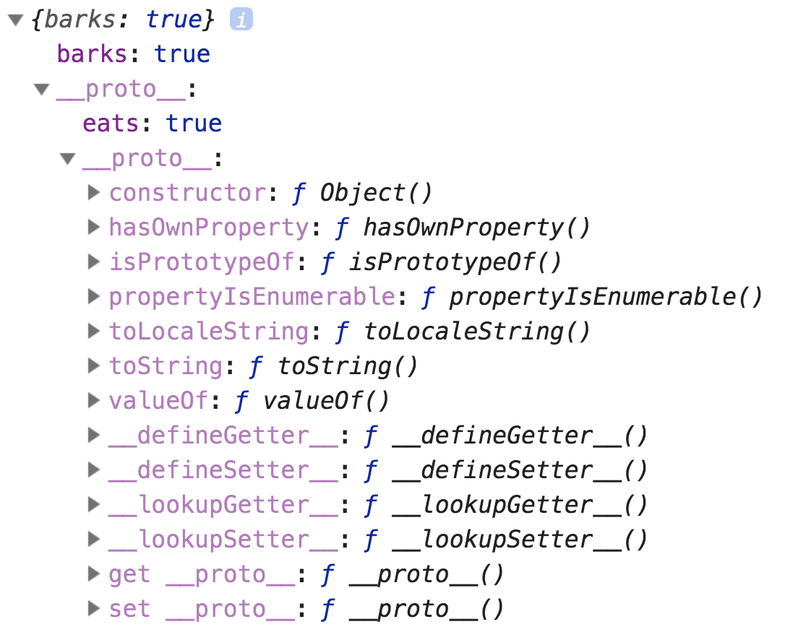
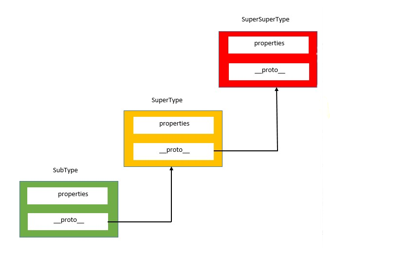
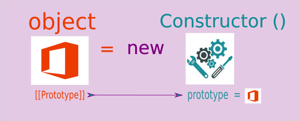
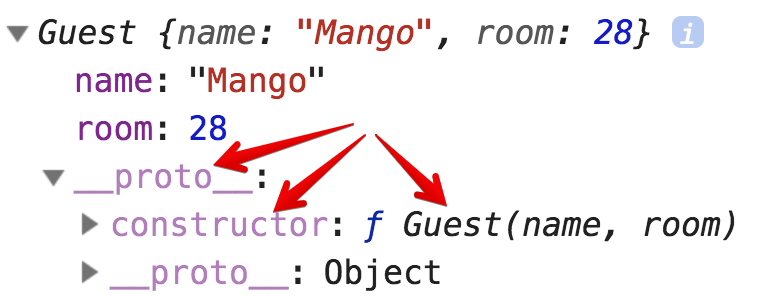
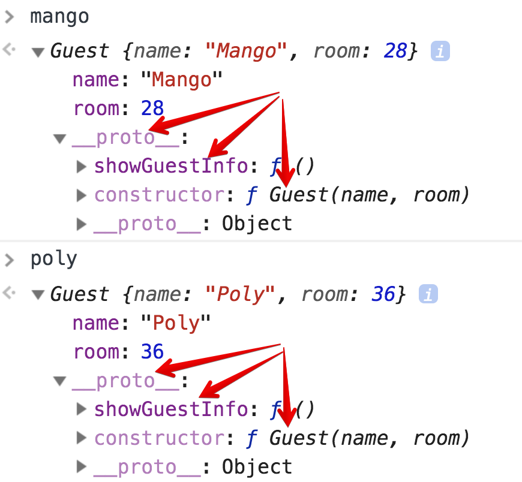
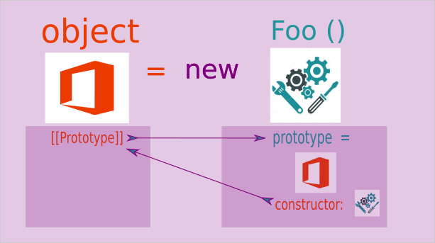

1. Прототип об`єкта
ООП в JavaScript побудовано на прототипному спадкуванні. Об'єкти можна
організувати в ланцюжки так, щоб властивість, не знайдене в одному об'єкті,
автоматично шукалось би в іншому. Сполучною ланкою виступає спеціально прихована
властивість [[Prototype]], в консолі вона зображається як __proto__.
1.1. Прототип
Якщо один об'єкт має спеціальне посилання в полі __proto__ на інший об'єкт, то
при читанні властивості з нього, якщо шукана властивість відсутня в самому
об'єкті, вона шукається в об'єкті на який посилається __proto__.
const animal = { eats: true };
const dog = { barks: true };
dog.__proto__ = animal;
// В dog можна знайти обидві властивості
console.log(dog.barks); // true
console.log(dog.eats); // true
Перший лог працює очевидним чином - він виводить властивість barks об'єкта
Dog. Другий лог хоче вивести dog.eats, шукає його в самому об'єкті dog, що
не знаходить і продовжує пошук в об'єкті по посиланню з dog .__ proto__,
тобто, в цьому випадку, в animal.
Об'єкт, на який вказує посилання в __proto__,
називається прототипом. В даному прикладі animal це прототип для
dog.
Якщо ми додамо об'єкту dog властивість eats і дамо йому false, то
результат буде таким.
const animal = { eats: true };
const dog = { barks: true, eats: false };
dog.__proto__ = animal;
console.log(dog.barks); // true
console.log(dog.eats); // false, властивість взято з dog
Іншими словами, прототип - це резервне сховище властивостей і методів об'єкта , автоматично використовується при пошуку. У об'єкта, який виступає прототипом може також бути свій прототип, у того свій, і так далі. При цьому властивості будуть шукатися по ланцюжку спадкування.
У специфікації властивість __proto__ позначено як[[Prototype]]. Подвійні
квадратні дужки тут важливі, вони вказують на те, що це внутрішня, службова
властивість.
Незважаючи на те, що властивість __proto__ на
сьогоднішній день стандартизовано, і простіше для пояснення матеріалу, його
зміна напряму є грубим порушенням. На практиці використовуються методи для
маніпуляції з прототипами, такі як Object.create (),
Object.getPrototypeOf (), Object.setPrototypeOf () і інші.
1.2. Object.create()
Для того щоб правильно поставити прототип об'єкта, можна використовувати метод
Object.create (obj), передавши параметром obj посилання на об'єкт який ми
хочемо зробити прототипом для створюваного об'єкта.
const animal = { eats: true };
const dog = Object.create(animal);
dog.barks = true;
console.log(dog.barks); // true
console.log(dog.eats); // true
На малюнку нижче видно те, що називається ланцюжком прототипів (prototype
chain) . У властивість __proto__ об'єкта dog записано посилання на об'єкт
Animal, у властивість__proto__ якого, в свою чергу, записано посилання на
батька всіх об'єктів Object. Саме тому ми можемо викликати методи на кшталт
HasOwnProperty або toString, хоча ми не визначали їх для dog або Animal.

Механізм пошуку властивості працює до першого збігу. Інтерпретатор шукає
властивість на ім'я в об'єкті, якщо не знаходить, то звертається до властивості
[[Prototype]], тобто переходить за посиланням до об'єкта-прототипу, а потім і
прототипу.
В кінці цього ланцюжка знаходиться null. У разі першого збігу буде повернуто
значення властивості. Якщо інтерпретатор добереться до кінця ланцюжка і не
знайде властивості з таким ключем, то поверне undefined.

Даний механізм називається динамічна диспетчеризація (Dynamic dispatch) або делегація (delegation). На відміну від статичної диспетчеризації, коли посилання вирішуються під час компіляції, динамічна диспетчеризація завжди дозволяє посилання під час виконання програми.
1.3. Object.prototype.hasOwnProperty()
Після того як ми дізналися про те, як відбувається пошук властивостей об'єкта,
має стати зрозуміло, чому цикл for ... in не робить різниці між властивостями
об'єкта і його прототипу.
const animal = { eats: true };
const dog = Object.create(animal);
dog.barks = true;
for (const key in dog) {
console.log(key); // barks, eats
}
Саме тому ми використовуємо метод obj.hasOwnProperty (prop), який повертає
true, якщо властивість prop належить самому об'єкту obj, а не його
прототипу, інакше false.
const animal = { eats: true };
const dog = Object.create(animal);
dog.barks = true;
for (const key in dog) {
if (!dog.hasOwnProperty(key)) continue;
console.log(key); // barks
}
Метод Object.keys (obj) поверне масив тільки власних ключів об'єкта obj,
тому рекомендується використовувати саме його.
const animal = { eats: true };
const dog = Object.create(animal);
dog.barks = true;
const dogKeys = Object.keys(dog);
console.log(dogKeys); // ['barks']
2. Властивість Function.prototype
Ми вже знаємо що таке прототип об'єкта, властивість __proto__, як відбувається
пошук відсутніх властивостей об'єкта по ланцюжку і методи вказівки прототипу для
одного об'єкта. Але в реальних задачах об'єкти створюються динамічно, тобто
функцією-конструктором, через new. Розберімося, як відбувається вказівка
прототипу в цьому випадку.
Створимо функцію-конструктор Guest яка буде створювати нам екземпляри об'єктів
гостя готелю.
const Guest = function (name, room) {
this.name = name;
this.room = room;
};
Оскільки, функція це теж об'єкт, у кожної функції, крім стрілкових, є
властивість prototype, в якому спочатку зберігається об'єкт з єдиним полем
Constructor, що вказує на саму функцію-конструктор.
У стрілкових функцій немає властивості prototype,
тому що їх не можна викликати через new, і, відповідно, в ньому нема потреби.
Властивість Function.prototype:
- Є об'єктом
- У нього можна записувати властивості й методи
- Властивості і методи
prototypeбудуть доступні за посиланням__proto__об'єкта - У властивості
prototypeспочатку є методconstructor
const Guest = function (name, room) {
this.name = name;
this.room = room;
};
console.log(Guest.prototype); // {constructor: ƒ}
При створенні об'єкта через new, в його поле__proto__ записується посилання
на об'єкт зберігається у властивості prototype функції-конструктора.

const Guest = function (name, room) {
this.name = name;
this.room = room;
};
const mango = new Guest('Mango', 28);
console.log(mango);

Цю особливість ми можемо використовувати для того, щоб додавати в об'єкт
Protopype методи, які будуть доступні за посиланням абсолютно всіх об'єктах
створеним через new Guest (...).
Причому якщо ми створимо мільйон примірників гостя, набір методів буде не у
кожного свій, а всього один, загальний, що зберігається у властивості
Guest.prototype і доступний всім нащадкам по посиланню, яке записується в поле
__proto__ об'єкта при створенні, через прототипного успадкування і ланцюжки
прототипів.
const Guest = function (name, room) {
this.name = name;
this.room = room;
};
Guest.prototype.showGuestInfo = function () {
console.log(`name: ${this.name}, room: ${this.room}`);
};
const mango = new Guest('Mango', 28);
const poly = new Guest('Poly', 36);
mango.showGuestInfo(); // name: Mango, room: 28
poly.showGuestInfo(); // name: Poly, room: 36

Оскільки у властивості prototype лежить об'єкт, то при прототипному
спадкуванні відбувається привласнення по посиланню, тому якщо ми змінимо
значення у властивості Prototype, то це нове значення отримають і всі
властивості, які мають посилання на об'єкт prototype.
2.1. Властивість constructor
Була згадка того, що за замовчуванням, об'єкт у властивості protopype вже
містить поле constructor. Запишемо це поле явно:
const Guest = function (name, room) {
this.name = name;
this.room = room;
};
Guest.prototype = {
constructor: Guest,
};
У коді вище ми створили властивість Guest.prototype вручну, але абсолютно
такий же об'єкт генерується автоматично. А властивість constructor містить
посилання на саму функцію-конструктор.

Властивість [[Prototype]] об'єкта називають прихованою властивістю, тому що
прямий доступ до нього обмежений засобами самої мови. Метод який робить запис
посилання в об'єкт в момент створення має такий доступ. Знаходиться цей метод в
об'єкті prototype функції й називається consrtuctor 🙂.
Understanding Prototypes in JavaScript
3. Спадкування і конструктори
Конструктор це функція для створення об'єктів за шаблоном. Оператор new
створює об'єкт і викликає функцію-конструктор в контексті цього об'єкта. На
виході отримуємо об'єкт з полями зазначеними в функції-конструкторі через this
і полем [[Prototype]] яке містить посилання на поле prototype
функції-конструктора.
Іноді трапляються завдання коли об'єкти створені функцією-конструктором повинні також мати доступ до полів і методів прототипу оголошення в інших функції-конструкторі.
Наприклад, ми пишемо гру в стилі RPG, і нам необхідно підготувати логіку для
класової системи персонажів, де є спільний конструктор Hero з дефолтними
полями загальними для всіх класів, на зразок імені, здоров'я, кількості досвіду
і т. п. Після чого нам необхідно зробити конструктори для Warrior і Wizard,
екземпляри яких також повинні мати доступ до полів Hero, але водночас мати
свої власні.
Реалізуймо це використовуючи прототипне успадкування.
const Hero = function (name, xp) {
this.name = name;
this.xp = xp;
};
/*
* Тепер у нас є конструктор базового класу героя,
* Додамо в prototype якийсь метод.
*/
Hero.prototype.gainXp = function (amount) {
console.log(`${this.name} gained ${amount} experience points`);
this.xp += amount;
};
const mango = new Hero('Mango', 1000);
console.log(mango); // Hero { name: 'Mango', xp: 1000 }
// Оскільки mango це екземпляр Hero, то йому доступні методи з Hero.prototype
mango.gainXp(500); // Mango gained 500 experience points
console.log(mango); // Hero { name: 'Mango', xp: 1500 }
Далі необхідно створити клас Warrior, оскільки немає сенсу додавати в Hero
абсолютно всі поля всіх класів. Тому нам необхідно створити ще
функцію-конструктор, але при цьому вона повинна бути якось пов'язана з Hero.
Для вирішення цього завдання ми можемо використовувати метод call (),
викликавши функцію-конструктор Hero і передавши їй об'єкт створюється в
Warrior як контекст.
const Warrior = function (name, xp, weapon) {
/*
* Під час виконання функції Warrior викликаємо функцію Hero
* в контексті об'єкта створюваного в Warrior, а так само передаємо
* аргументи для ініціалізації полів this.name і this.xp
*
* this це майбутній екземпляр Warrior
*/
Hero.call(this, name, xp);
// Тут додаємо нову властивість - зброя
this.weapon = weapon;
};
// Відразу додамо метод для атаки в prototype воїна
Warrior.prototype.attack = function () {
console.log(`${this.name} attacks with ${this.weapon}`);
};
const poly = new Warrior('Poly', 200, 'sword');
console.log(poly); // Warrior {name: "Poly", xp: 200, weapon: "sword"}
poly.attack(); // Poly attacks with sword
Начебто все добре, але що станеться якщо ми спробуємо викликати у poly метод
GainXp (), який оголошено на Hero.prototype? - буде помилка
poly.gainXp(); // Uncaught TypeError: poly.gainXp is not a function
Річ у тім, що поля з Hero.prototype не повинні додаватися в ланцюжок
прототипів по замовчуванню. Необхідно явно вказати зв'язок поля
Warrior.prototype і Hero.prototype. Зробити це дуже легко, але важливо
розуміти як і чому це працює
/*
* Використовуємо Object.create () для того щоб спочатку записати
* В Warrior.prototype порожній об'єкт, в __proto__ якого буде
* Посилання на Hero.prototype. Це необхідно зробити до того
* Як додавати методи
*/
Warrior.prototype = Object.create(Hero.prototype);
// Не забуваємо додати в Warrior.prototype властивість constructor
Warrior.prototype.constructor = Warrior;
// Додамо метод для атаки
Warrior.prototype.attack = function () {
console.log(`${this.name} attacks with ${this.weapon}`);
};
// Спробуємо тепер
poly.gainXp(300); // Poly gained 300 experience points
В результаті ми отримали ланцюжок прототипів. При виклику poly.gainXp (), йде
пошук поля gainXp в самому об'єкті poly, якщо такого немає, тоді йде пошук в
тому об'єкті який вказаний в полі poly .__ proto__, це посилання на
Warrior.ptototype.
Якщо ж його немає і там, то пошук йде в поле __proto__ того об'єкта, що
зазначений в poly .__ proto__, тобто в poly .__ proto __.__ proto__, а це
посилання на Hero.prototype, де є метод gainXp.
Повний код прикладу.
const Hero = function (name, xp) {
this.name = name;
this.xp = xp;
};
Hero.prototype.gainXp = function (amount) {
console.log(`${this.name} gained ${amount} experience points`);
this.xp += amount;
};
const Warrior = function (name, xp, weapon) {
Hero.call(this, name, xp);
this.weapon = weapon;
};
Warrior.prototype = Object.create(Hero.prototype);
Warrior.prototype.constructor = Warrior;
Warrior.prototype.attack = function () {
console.log(`${this.name} attacks with ${this.weapon}`);
};
const poly = new Warrior('Poly', 200, 'sword');